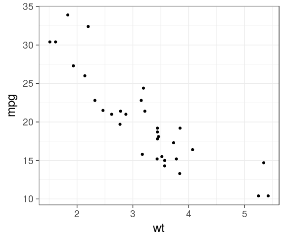
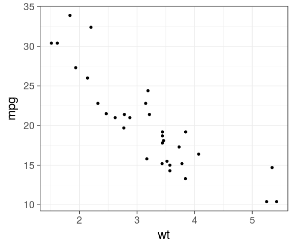

the tidyverse makes your life easy by evaluating columns in df/tibble context.
R base, must refers to mtcars
plot(mtcars$wt, mtcars$mpg)
ggplot2 does the job
ggplot(mtcars, aes(x = wt, y = mpg)) + geom_point()

4 May 2017
the tidyverse makes your life easy by evaluating columns in df/tibble context.
mtcarsplot(mtcars$wt, mtcars$mpg)
ggplot(mtcars, aes(x = wt, y = mpg)) + geom_point()

wt is unknow in the global environment
wt
Error in eval(expr, envir, enclos): object 'wt' not found
combine substitute and eval in df context
eval(substitute(wt), mtcars)
[1] 2.620 2.875 2.320 3.215 3.440 3.460 3.570 3.190 3.150 3.440 3.440 [12] 4.070 3.730 3.780 5.250 5.424 5.345 2.200 1.615 1.835 2.465 3.520 [23] 3.435 3.840 3.845 1.935 2.140 1.513 3.170 2.770 3.570 2.780
mtcars %>% select(wt) %>% head()
wt Mazda RX4 2.620 Mazda RX4 Wag 2.875 Datsun 710 2.320 Hornet 4 Drive 3.215 Hornet Sportabout 3.440 Valiant 3.460
When dealing with global variables, fine. But local ones in function…
mtcars %>% ggplot(aes(x = mpg)) + geom_histogram(bins = 25)
mtcars_dens <- function(df, col) {
df %>%
ggplot(aes(x = col)) +
geom_histogram(bins = 25)
}
mtcars_dens(df = mtcars, col = "mpg")
Error: StatBin requires a continuous x variable the x variable is discrete. Perhaps you want stat="count"?
aes_string() mtcars_dens <- function(df, col) {
df %>%
ggplot(aes_string(x = col)) +
geom_histogram(bins = 25)
}
mtcars_dens(df = mtcars, col = "mpg")mtcars_dens(df = mtcars, col = "hp")
mtcars %>% filter(hp > 250)
mpg cyl disp hp drat wt qsec vs am gear carb 1 15.8 8 351 264 4.22 3.17 14.5 0 1 5 4 2 15.0 8 301 335 3.54 3.57 14.6 0 1 5 8
mtcars_filter <- function(df, col) {
df %>%
filter(col > 250)
}
mtcars_filter(df = mtcars, col = "hp")
mpg cyl disp hp drat wt qsec vs am gear carb Mazda RX4 21.0 6 160.0 110 3.90 2.620 16.46 0 1 4 4 Mazda RX4 Wag 21.0 6 160.0 110 3.90 2.875 17.02 0 1 4 4 Datsun 710 22.8 4 108.0 93 3.85 2.320 18.61 1 1 4 1 Hornet 4 Drive 21.4 6 258.0 110 3.08 3.215 19.44 1 0 3 1 Hornet Sportabout 18.7 8 360.0 175 3.15 3.440 17.02 0 0 3 2 Valiant 18.1 6 225.0 105 2.76 3.460 20.22 1 0 3 1 Duster 360 14.3 8 360.0 245 3.21 3.570 15.84 0 0 3 4 Merc 240D 24.4 4 146.7 62 3.69 3.190 20.00 1 0 4 2 Merc 230 22.8 4 140.8 95 3.92 3.150 22.90 1 0 4 2 Merc 280 19.2 6 167.6 123 3.92 3.440 18.30 1 0 4 4 Merc 280C 17.8 6 167.6 123 3.92 3.440 18.90 1 0 4 4 Merc 450SE 16.4 8 275.8 180 3.07 4.070 17.40 0 0 3 3 Merc 450SL 17.3 8 275.8 180 3.07 3.730 17.60 0 0 3 3 Merc 450SLC 15.2 8 275.8 180 3.07 3.780 18.00 0 0 3 3 Cadillac Fleetwood 10.4 8 472.0 205 2.93 5.250 17.98 0 0 3 4 Lincoln Continental 10.4 8 460.0 215 3.00 5.424 17.82 0 0 3 4 Chrysler Imperial 14.7 8 440.0 230 3.23 5.345 17.42 0 0 3 4 Fiat 128 32.4 4 78.7 66 4.08 2.200 19.47 1 1 4 1 Honda Civic 30.4 4 75.7 52 4.93 1.615 18.52 1 1 4 2 Toyota Corolla 33.9 4 71.1 65 4.22 1.835 19.90 1 1 4 1 Toyota Corona 21.5 4 120.1 97 3.70 2.465 20.01 1 0 3 1 Dodge Challenger 15.5 8 318.0 150 2.76 3.520 16.87 0 0 3 2 AMC Javelin 15.2 8 304.0 150 3.15 3.435 17.30 0 0 3 2 Camaro Z28 13.3 8 350.0 245 3.73 3.840 15.41 0 0 3 4 Pontiac Firebird 19.2 8 400.0 175 3.08 3.845 17.05 0 0 3 2 Fiat X1-9 27.3 4 79.0 66 4.08 1.935 18.90 1 1 4 1 Porsche 914-2 26.0 4 120.3 91 4.43 2.140 16.70 0 1 5 2 Lotus Europa 30.4 4 95.1 113 3.77 1.513 16.90 1 1 5 2 Ford Pantera L 15.8 8 351.0 264 4.22 3.170 14.50 0 1 5 4 Ferrari Dino 19.7 6 145.0 175 3.62 2.770 15.50 0 1 5 6 Maserati Bora 15.0 8 301.0 335 3.54 3.570 14.60 0 1 5 8 Volvo 142E 21.4 4 121.0 109 4.11 2.780 18.60 1 1 4 2
mtcars_filter <- function(df, col) {
filter_call <- lazyeval::interp(~ var > 250, var = as.name(col))
df %>%
filter_(.dots = filter_call)
}
mtcars_filter(df = mtcars, col = "hp")mpg cyl disp hp drat wt qsec vs am gear carb 1 15.8 8 351 264 4.22 3.17 14.5 0 1 5 4 2 15.0 8 301 335 3.54 3.57 14.6 0 1 5 8
Ugly, complex, hard but mandatory
With dynamic threshold
mtcars_filter <- function(df, col, threshold) {
filter_call <- lazyeval::interp(~ var > thr,
var = as.name(col),
thr = quote(threshold))
df %>%
filter_(.dots = filter_call)
}
mtcars_filter(df = mtcars, col = "hp", threshold = 265)mpg cyl disp hp drat wt qsec vs am gear carb 1 15 8 301 335 3.54 3.57 14.6 0 1 5 8
described in this vignette
variables as strings
fun1 <- function(name) {
paste0("name is, ", name)
}
fun1("stringent")
[1] "name is, stringent"
gluefun2 <- function(name) {
glue::glue("name is {name}")
}
fun2("stringent")
name is stringent
currently discussed
We can pass on hp as a promise (it is unknow in Global Env), evaluation is delayed and enquo() uses some dark magic
mtcars_filter <- function(df, column) {
col <- enquo(column)
message(col)
df %>%
select(!! col)
}
mtcars_filter(df = mtcars, column = hp)
~hp
hp Mazda RX4 110 Mazda RX4 Wag 110 Datsun 710 93 Hornet 4 Drive 110 Hornet Sportabout 175 Valiant 105 Duster 360 245 Merc 240D 62 Merc 230 95 Merc 280 123 Merc 280C 123 Merc 450SE 180 Merc 450SL 180 Merc 450SLC 180 Cadillac Fleetwood 205 Lincoln Continental 215 Chrysler Imperial 230 Fiat 128 66 Honda Civic 52 Toyota Corolla 65 Toyota Corona 97 Dodge Challenger 150 AMC Javelin 150 Camaro Z28 245 Pontiac Firebird 175 Fiat X1-9 66 Porsche 914-2 91 Lotus Europa 113 Ford Pantera L 264 Ferrari Dino 175 Maserati Bora 335 Volvo 142E 109
quoinside functionmtcars_filter <- function(df, column, threshold) {
var <- quo(hp > !! threshold)
message(var)
df %>%
filter(!! var)
}
mtcars_filter(df = mtcars, hp, threshold = 300)
~hp > 300
mpg cyl disp hp drat wt qsec vs am gear carb 1 15 8 301 335 3.54 3.57 14.6 0 1 5 8
quoins function' callmtcars_filter2 <- function(df, expr) {
var <- enquo(expr)
message(var)
df %>%
filter(!! var)
}
mtcars_filter2(df = mtcars, cyl > 6)
~cyl > 6
mpg cyl disp hp drat wt qsec vs am gear carb 1 18.7 8 360.0 175 3.15 3.440 17.02 0 0 3 2 2 14.3 8 360.0 245 3.21 3.570 15.84 0 0 3 4 3 16.4 8 275.8 180 3.07 4.070 17.40 0 0 3 3 4 17.3 8 275.8 180 3.07 3.730 17.60 0 0 3 3 5 15.2 8 275.8 180 3.07 3.780 18.00 0 0 3 3 6 10.4 8 472.0 205 2.93 5.250 17.98 0 0 3 4 7 10.4 8 460.0 215 3.00 5.424 17.82 0 0 3 4 8 14.7 8 440.0 230 3.23 5.345 17.42 0 0 3 4 9 15.5 8 318.0 150 2.76 3.520 16.87 0 0 3 2 10 15.2 8 304.0 150 3.15 3.435 17.30 0 0 3 2 11 13.3 8 350.0 245 3.73 3.840 15.41 0 0 3 4 12 19.2 8 400.0 175 3.08 3.845 17.05 0 0 3 2 13 15.8 8 351.0 264 4.22 3.170 14.50 0 1 5 4 14 15.0 8 301.0 335 3.54 3.570 14.60 0 1 5 8
mtcars_filter2(df = mtcars, hp > 250)
~hp > 250
mpg cyl disp hp drat wt qsec vs am gear carb 1 15.8 8 351 264 4.22 3.17 14.5 0 1 5 4 2 15.0 8 301 335 3.54 3.57 14.6 0 1 5 8
mtcars_filter2(df = mtcars, am == 0)
~am == 0
mpg cyl disp hp drat wt qsec vs am gear carb 1 21.4 6 258.0 110 3.08 3.215 19.44 1 0 3 1 2 18.7 8 360.0 175 3.15 3.440 17.02 0 0 3 2 3 18.1 6 225.0 105 2.76 3.460 20.22 1 0 3 1 4 14.3 8 360.0 245 3.21 3.570 15.84 0 0 3 4 5 24.4 4 146.7 62 3.69 3.190 20.00 1 0 4 2 6 22.8 4 140.8 95 3.92 3.150 22.90 1 0 4 2 7 19.2 6 167.6 123 3.92 3.440 18.30 1 0 4 4 8 17.8 6 167.6 123 3.92 3.440 18.90 1 0 4 4 9 16.4 8 275.8 180 3.07 4.070 17.40 0 0 3 3 10 17.3 8 275.8 180 3.07 3.730 17.60 0 0 3 3 11 15.2 8 275.8 180 3.07 3.780 18.00 0 0 3 3 12 10.4 8 472.0 205 2.93 5.250 17.98 0 0 3 4 13 10.4 8 460.0 215 3.00 5.424 17.82 0 0 3 4 14 14.7 8 440.0 230 3.23 5.345 17.42 0 0 3 4 15 21.5 4 120.1 97 3.70 2.465 20.01 1 0 3 1 16 15.5 8 318.0 150 2.76 3.520 16.87 0 0 3 2 17 15.2 8 304.0 150 3.15 3.435 17.30 0 0 3 2 18 13.3 8 350.0 245 3.73 3.840 15.41 0 0 3 4 19 19.2 8 400.0 175 3.08 3.845 17.05 0 0 3 2
:=my_mutate <- function(df, out_name, expr) {
expr <- enquo(expr)
out <- enquo(out_name)
g_name <- paste0("mean_", quo_name(out))
summarise(df,
!!g_name := mean(!!expr)
)
}
my_mutate(mtcars, out_name = gear_type, am)
mean_gear_type 1 0.40625
I can categorically say if you're pasting strings to program with dplyr, there is always better way. Hadley